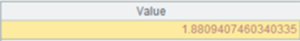
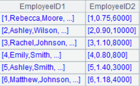
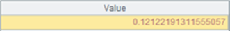

T.record()
Description：
Make members of a sequence the new field values of records of a table sequence.
Syntax：
T.record(A,k)
Note：
From the specified record k, reassign values to the fields of table sequence T’s records in sequence with members of sequence A. The number of to-be-reassigned records is determined by the number of both A’s members and T’s fields. If the number of A’s members is indivisible by the number of T’s fields, go on to reassign A’s remaining members to the fields of the next record.
Parameter：
|
k |
An integer; this means the records will be modified from the kth one. By default, or when k is 0, append records to table sequence T. |
|
A |
A sequence whose members are re-assigned to T’s fields. |
|
T |
A table sequence. |
Option：
|
@i |
Insert one or more records before the specified record k. |
Return value：
Table sequence
Example：
|
|
A |
|
|
1 |
=create(StuID,StuName,English) |
 |
|
2 |
=A1.record([1,"Lucy",98,2,"Petter",87]) |
Append records to the table sequence by default.
|
|
3 |
=A1.record([10," Claire",88],0) |
Append records to the table sequence when k is 0.  |
|
4 |
=A1.record([10,"Gail",88],3) |
Modify the 3rd record when k is 3.
|
|
5 |
=A1.record@i([11," Jamie",90],1) |
Insert a record before the 1st record when k is 1.  |
|
6 |
=A1.record([3," Lily",67,4]) |
4, A’s remaining member, is used to append another record.
|